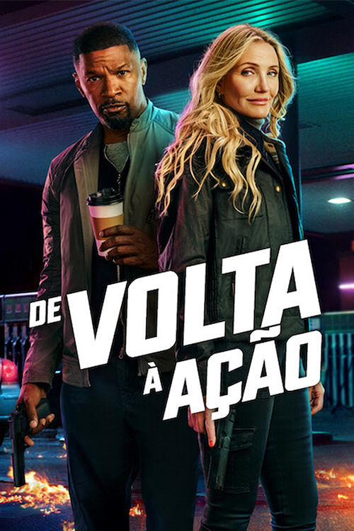
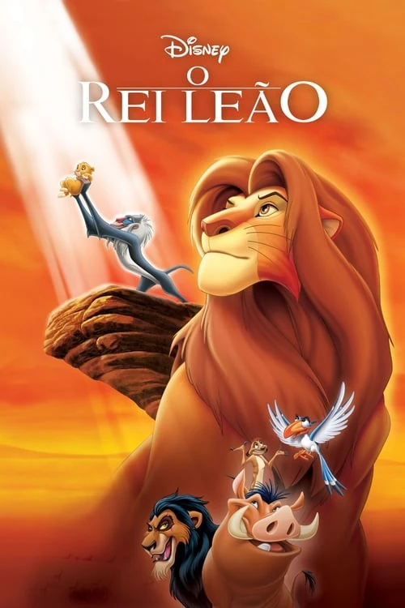

de volta a ação
De Volta à Ação" (2025), os ex-agentes da CIA Emily (Cameron Diaz) e Matt (Jamie Foxx) fingem a própria morte para viverem como civis e criarem uma família. Quinze anos depois, o disfarce deles é descoberto após um incidente, forçando o casal a retornar ao perigoso mundo da espionagem

Velozes & Furiosos 7
Velozes & Furiosos 7, Dominic Toretto e sua equipe enfrentam Deckard Shaw, um assassino profissional que busca vingança pela morte de seu irmão. Ao mesmo tempo, o grupo aceita ajudar um agente secreto para recuperar o "Olho de Deus", um poderoso programa de rastreamento

Jurassic World Dominion
Jurassic World: Domínio se passa quatro anos após a destruição da Isla Nublar. Os dinossauros agora vagam e caçam livremente pelo mundo ao lado dos humanos. A trama principal acompanha Owen Grady e Claire Dearing protegendo Maisie Lockwood, enquanto o trio clássico Alan Grant, Ellie Sattler e Ian Malcolm investigam uma megacorporação genética por trás de uma praga de gafanhotos pré-históricos gigantes

O Rei Leão
O Rei Leão conta a história de Simba, um filhote de leão destinado a ser o próximo rei das Terras do Reino. Após uma armadilha mortal armada por seu tio Scar que resulta na morte do rei Mufasa, Simba foge, culpa-se pela tragédia e cresce longe de casa com novos amigos, até decidir retornar para enfrentar seu destino e retomar o trono